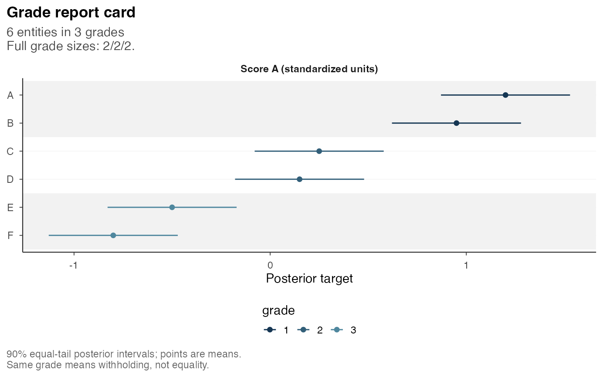
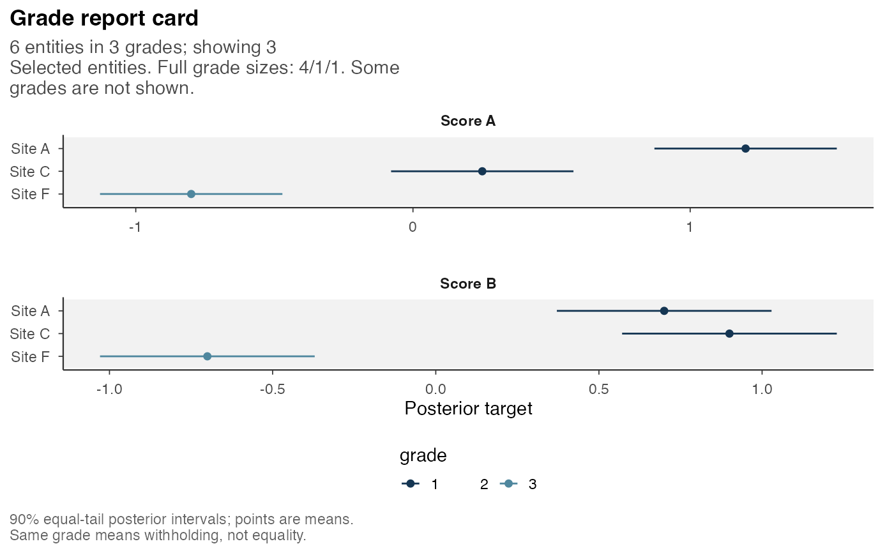

Plot Posterior Estimates and Grade Membership
postrank_plot_report_card.Rdpostrank_plot_report_card() plots the stored posterior mean and central
interval for each displayed entity, with one panel per criterion and color
showing grade membership. Grade 1 is the highest priority, and larger target
values mean higher priority as declared when the input was built. Each
horizontal bar summarizes marginal uncertainty for one entity's target at a
time; entities in the same grade are left unordered (withheld), which does
not mean their targets are equal.
Usage
postrank_plot_report_card(
x,
criteria = NULL,
order = c("grade", "expected_rank", "mean", "label"),
max_rows = 30L,
show_withheld = TRUE,
...,
entities = NULL,
entity_labels = NULL,
criterion_labels = NULL,
ncol = NULL,
order_by = NULL
)Arguments
- x
A
postrank_report_cardor apostrank_analysiswith a prepared report card.- criteria
Optional character vector of distinct criterion IDs from the card, giving the subset and left-to-right (or top-to-bottom) panel order.
NULL(the default) shows all criteria in stored weight order.- order
Ordering of entities within each grade:
"grade"(the default) keeps the report card's storedsort_rank(1..nrow order);"expected_rank"sorts by weighted expected rank across all criteria in the card;"mean"sorts by descending posterior mean on one criterion;"label"sorts by raw entity ID in locale-independent byte/ASCII lexicographic ("radix") order.- max_rows
Positive integer cap on automatically displayed entities (default
30L), orNULLto show every entity. Ignored whenentitiesis supplied.- show_withheld
Logical scalar (
TRUEby default). WhenTRUEand the full card has more than one grade, includes full-report grade sizes in the subtitle.- ...
Unused; passing any argument in
...stops with an error. Pass arguments after...by name.- entities
Optional character vector of distinct entity IDs from the card to display. All named entities are shown even when
length(entities)exceedsmax_rows; their vertical order followsorder, not the order ofentities.- entity_labels
Optional named character vector mapping known raw entity IDs in the card to non-blank display names. Unmapped IDs keep their raw IDs. Resulting display names must be distinct across the full card (include an ID when two names would match);
"\n"may be used to break long labels.- criterion_labels
Optional named character vector mapping known criterion IDs in the card to non-blank panel strip labels. Unmapped IDs replace underscores with spaces unless that would create duplicate labels. Resulting strip labels must be distinct across all criteria in the card.
- ncol
Positive integer number of facet columns.
NULL(the default) usesmin(3, length(criteria_shown)); values above the number of displayed criteria are capped at that count. Usencol = 1for narrow pages.- order_by
Single criterion ID used when
order = "mean". Must beNULLfor otherorderchoices. Required whenorder = "mean"and more than one criterion is displayed; whenNULLwith a single displayed criterion, that criterion is used. An explicitorder_bymay name any criterion in the card, even one omitted fromcriteria.
Value
A ggplot object whose $data table holds the same columns as
postrank_plot_data(x, "report_card") for the displayed entities and
criteria, ordered by order with entity_id, criterion, and grade
stored as factors (over raw IDs and 1..G) alongside sort_rank (1..n
row order stored in the card), n_withheld (number of other entities in
the same grade), mean, lower, upper, and expected_rank. If x is a
postrank_analysis whose report_card slot is NULL, returns an empty
status ggplot stating why no report card is available.
Details
The plot reads stored means, interval endpoints, and grades without solving
or recomputing posterior summaries. Points mark posterior means and segments
mark central intervals (lower to upper) on "Posterior target"; means
are never clipped to interval endpoints because a skewed posterior can have
its mean outside its central interval. The caption records the stored
percentage level (100 * card$level, where card is x or x$report_card)
and states whether the intervals came from supplied marginal summaries or
computed equal-tail posterior intervals (from draws, an exact finite law, or
normal/mixture posteriors). These intervals are marginal posterior summaries
for individual targets, not simultaneous intervals and not confidence
intervals for grade labels or solver bounds.
Grades always stay in contiguous vertical blocks (1 at the top), with light
gray background bands on odd-numbered grades. When order = "expected_rank",
expected ranks are combined using the card's criterion weights across all
criteria, even if criteria displays a subset. When order = "mean", means
on different criteria are never added together. Display labels affect axis
and strip text only.
When entities is NULL and the card has more than max_rows entities,
deterministic display selection gives at least one row to each grade when
max_rows >= G, allocates remaining rows in proportion to grade size, and
spaces rows across each grade; if max_rows < G, some grades are omitted
and the subtitle notes this. That subset is for visual layout only, not a
statistical sample or a re-grading. Colors use scale_colour_grade() with
the full report's grade count G up to 64 grades (and neutral dark gray
without a legend when G > 64), so subsets keep their original grade colors.
Examples
one <- postrank_example("tutorial_one")
postrank_plot_report_card(
one,
max_rows = NULL,
criterion_labels = c(score_A = "Score A (standardized units)")
)

Open full-size figure
two <- postrank_example("tutorial_two")
postrank_plot_report_card(
two,
ncol = 1,
entities = c("A", "C", "F"),
entity_labels = c(A = "Site A", C = "Site C", F = "Site F"),
criterion_labels = c(score_A = "Score A", score_B = "Score B")
)

Open full-size figure